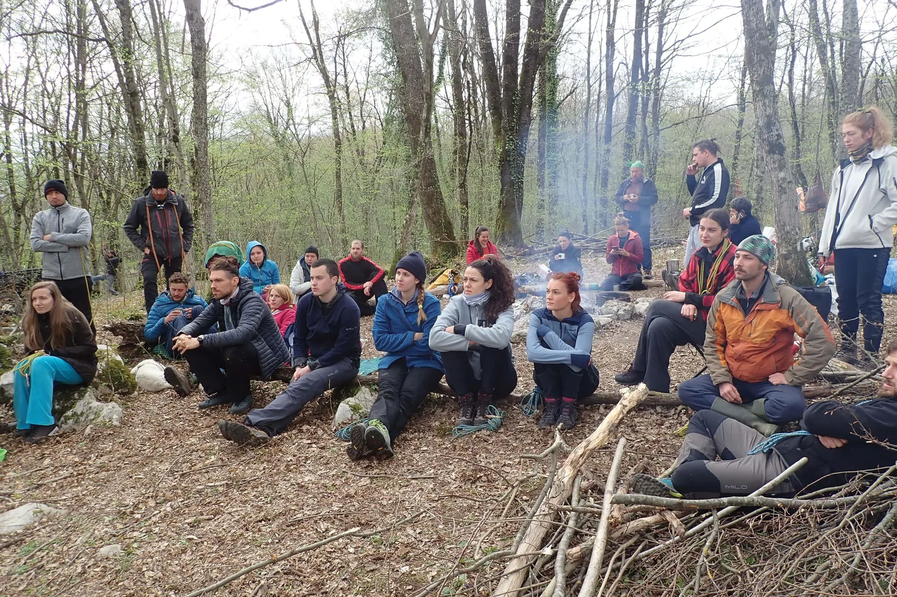

2021.-
Broji li se od brojke 50 unatrag ili dalje, prema 100? Već sama činjenica da je u kontinuitetu održano 50 speleoloških škola, kroz koje je prošlo i educirano preko 1200 speleoloških pripravnika -dovoljno je impresivna.…

51. zagrebačka speleološka škola
07. travnja-12. svibnja 2021.
Voditeljica: ELA KOVAČ
Polaznici (18, završilo 17): Ana Ercegovac, Mislav Sajko, Filip Pranklin, Lea Okički, Fran Požnjak, Ines Botica, Borna Juraj Jelić, Slađana Mišić, Vedrana Križanić, Ema Kovačević, Katarina Sever, Marin Ivković, Ivona Lozančić, Andrija Blažić, Ana Šabanović, Brigita Švec, Antonio Prvonožec, Dora Plavčić
Instruktori i demonstratori: Tea Selaković, Domagoj Čajko, Ana Lipovac, Pava Vidić, Vedran Ferenčak, Marina Grandić, Dalibor Paar, David Rafael Lipovac, Helena Polšek, Marko Ličko, Ana Bakšić, Valentina Plemenčić, Marko Rakovac, Karmen Jakovina, Dejan Blaženović, Joviša Bajić, Katarina Azinović, Dora Perinčić, Maja Marinić, Max Capan, Darko Jeras, Gordan Bezjak, Antonela Barbir, Marin Mašina, Ivor Janković, Igoro Dodolović, Marijan Sutlović, Darko Troha, Dino Grozić, Lovel Kukulan (SUE), Loris Redovniković, Barbara Domitrović, Lukas Grbac Lacković, Damir Lacković, Gorana Perić, Luka Ivančić, Daniel Lacko, Marin Mustapić, Marjan Prpić, Lucija Kauf, Jure Šarić
---------------------------------------------------------------------
52. zagrebačka speleološka škola
16. ožujka-27. travnja 2022.
Voditeljica: PAVA VIDIĆ
Polaznici (21, završilo 18): Noa Balen, Borna Boban, Ivan Čulina, Grigor Dumbović, Livio Dužić, Nikola Fabijanić, Eric Hadžić, Lorenzo Hanzir-Ferek, Olga Jerković Perić, Dejan Kalebić, Nini Legović, Tvrtko Podner, Rahela Šanjek, Rebeka Šanjek, Petra Šoštarić Vulić, Marija Tomičić, Teo Toplak, Clea Tunjić, Roko Željem , Ivona Borošić, Ivan Pušić
Instruktori i demonstratori: Domagoj Čajko,Filip Pranklin, Maja Marinić, Andrija Blažić, Mislav Sajko, Ana Ercegovac, Ivan Drnić, Ana Lipovac, Ana Vidić, Dalibor Paar, Vedran Ferenčak, Tea Selaković, Tatjana Vujnović, Barbara Domitrović, Ivan Bašić, Marko Rakovac, Dora Perinčić, Marko Ličko, Darko Jeras, Fran Požnjak, Igor Dodolović, Čedo Josipović, Tin Novosel, Davorin Turković, Pava Vidić, Filip Pranklin, Maja Marinić, Andrija Blažić, Mislav Sajko, Ana Ercegovac, Valentina Plemenčić, Vedran Ferenčak, Tea Selaković, Barbara Domitrović, Ivan Bašić, Dora Perinčić, Marko Ličko, Katarina Azinović, Lea Okićki, Ivor Janković, Gorana Perić, Matej Blatnik, Ivan Miloš, Jonathan Gabris, Pava Vidić
-----------------------------------------------------------------------
53. zagrebačka speleološka škola
22. ožujka-03. svibnja 2023.
Voditeljica: MARINA GRANDIĆ
Polaznici (21, završilo 19):
Dora Troha, Sofija Antić, Tomasz Radon, Jakov Kožić, Jelena Babić, Tin Dožić, David Dianežević, Rene Borna Gržin, Matko Soče, Barbara Trojko, Iva Stojić, Krunoslav Runtas, Danilo Dobrić, Filip Lemić, Bruna Bušić, Šime Šarić, Monika Horvat, Ema Buljan, Karla Tolić i Paula Skelin (položila sa 54. školom)
Instruktori: Ana Bakšić, Dalibor Paar, Čedo Josipović, Marko Rakovac, Marina Grandić, Tea Selaković, Domagoj Čajko, Valentina Plemenčić, Jure Šarić, Edo Vričić, Pava Vidić, Ana Lipovac...
(Na izletu u Jopićevu sudjelovali i karlovački speleolozi Željko Baćurin, Dinko Stopić, Hrvoje Cvitanović i Luka (?)
--------------------------------------------------------------------
51. zagrebačka speleološka škola 52. zagrebačka speleološka škola
Hommage školaraca 53. voditeljici škole ( i nama za arhivu )
54. zagrebačka speleološka škola
16. ožujka- 28. travnja 2024.
Voditelj: MARKO LIČKO
Polaznici (19, završilo 19):
Toni Kočevar, Tea Mauhar, Dragana Rajković, Hrvoje Đurinski, Maja Drobac, Sebastian Barić
Marina Hajdarović, Teo Barić, Klara Filakovity, Tibor Jaklin, Lovro Vragolović, Filip Milešević
Matea Novosel, Dubravko Kezić, Igor Božić, Antonio Duvnjak, Ivona Klišanin, Marin Simonišek i
Paula Skelin (iz 53. škole)
Instruktori: Marko Ličko, Dalibor Paar, Čedo Josipović, Tea Selaković, Valentina Plemenčić, Domagoj Čajko, Edo Vričić, Ivor Janković, Maja Marinić, Barbara Domitrović, Gorana Perić, Luka Ivančić, Ela Kovač, Vedran Ferenčak...
--------------------------------------------------------------------------------
54. speleološka škola na svom prvom putu u vrli Novi svijet. -------------------------------------------------------------------------
55. zagrebačka speleološka škola
05. ožujka- 23. travnja 2025.
Voditelji: EDO VRIČIĆ i KATARINA AZINOVIĆ
Polaznici (17): Petra Jagodić, Marin Jovanović, Ines Šašić, Jan Sohr, Ana Đukić, Ana Horvat (OB), Borna Kos, Igor Kaucki, Lucija Cindrić, Stjepan Schonberger, Tomislav Mikić, Sanja Kalebić, Roko Levar, Ana Horvat, Nino Pintarić i Iva Ćurković (Ana Marija Fistonić odustala zbog poslovnih obaveza ali ostala u Velebitu do slijedeće škole). Svi ostali uspješno završili školu.
Instruktori i demonstratori: (Edo još uvijek završava popis)
55. zagrebačka speleološka škola, polaznici i dio instruktora
-------------------------------------------------------------------------------------------
56. zagrebačka speleološka škola
25. ožujka 2026.- 03. svibnja 2026.
Voditeljica: GORANA PERIĆ
Polaznici (14): Agni Zlatarić (odustao), Matija Hrženjak, Dorotea Dugošija, Ivica Pizent, Grgo Pavlović (odustao-ozljeda), Vesna Selaković, Ema Kosnica (odustala-ozljeda), Antonija Lapaš, Klara Krstičević, Lea Vučinić (odustala), Roberto Punek, Klara Kundid, Jana Požeg Krišković, Morena Dobrić
Novi speleološki pripravnici: Matija Hrženjak, Dorotea Dugošija, Ivica Pizent, Vesna Selaković, Antonija Lapaš, Klara Krstičević, Roberto Punek, Jana Požeg Krišković, Morena Dobrić
Instruktori i demonstratori; Dalibor Paar, Ivor Janković, Tibor Bali, Marko Rakovac, Ana Bakšić, Čedo Josipović, Darko Troha, Marko Ličko, Tea Blatnik, Dora Troha, Domagoj Čajko, Luka Ivančić, Barbara Domitrović...
(cjeloviti popis priložen u arhivi škole).
---------------------------------------------------------------
Oni su postali dio velebitaške legende. Želite li i vi?
Prijavite se u novu školu!